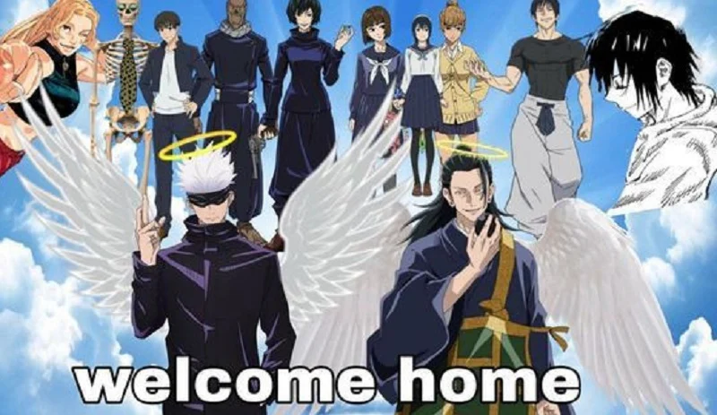
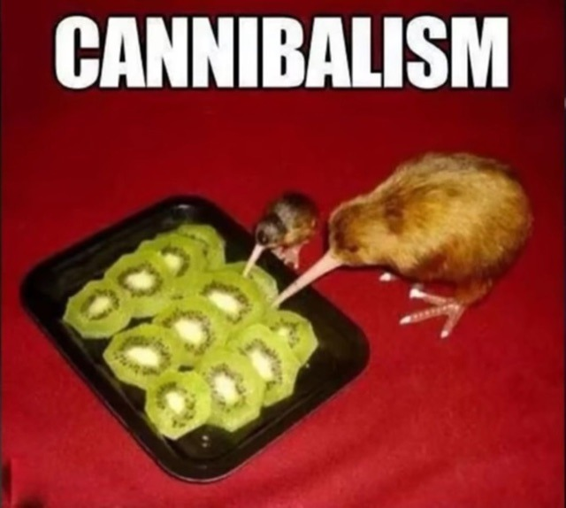
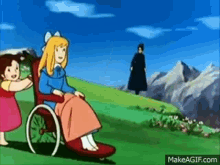

Você encontra o artefato e sente um poder crescente. O guardião na visão diz que você deve ir para a Montanha da Perdição para encontrar uma relíquia que pode derrotar a ameaça. Como você começa sua jornada?
A jornada é árdua e perigosa. Você encontra uma bifurcação na estrada, uma opção mais curta e arriscada ou um caminho mais longo, porém mais seguro.
O sábio dá conselhos e uma poção de invisibilidade. No entanto, ele alerta sobre um guardião na entrada da Montanha da Perdição.Como você usa a poção?
O caminho está cheio de emboscadas e você é atacado por bandidos. Você foi morto!
Leva mais tempo, mas evita perigos
Você evita a detecção, mas a poção tem um tempo limitado. Você não toma a quantidade certa e não faz efeito.
Você chega à entrada da câmara onde a relíquia está guardada. O guardião, um ser mágico poderoso, está de guarda. Sem a poção de invisibilidade, você deve enfrentar o guardião diretamente..
Ao final do caminho longo, você chega à base da Montanha da Perdição exausto, mas a salvo. O tempo extra e os recursos adicionais que você adquiriu na aldeia lhe proporcionam uma vantagem, mas seu cansaço pode afetar suas habilidades e decisões futuras.

Você leva uma porrada do guardião

Você falhou e enfrentrou uma batalha sem preparo e morreu.
Ao armar sua barraca é comido por um jacaré!
Apesar do cansaço, você decide ir diretamente para o desafio final. Isso pode apressar o encontro com o guardião da relíquia, mas você estará em desvantagem devido à fadiga.
Uma carroça passa por cima de você.
Você passa um tempo recuperando suas forças. Durante esse período, pode encontrar um grupo . A letra que você escolher definirá seu futuro!
É um grupo de canibais, te atacam e te comem!.
Eles te empurram de um penhasco
